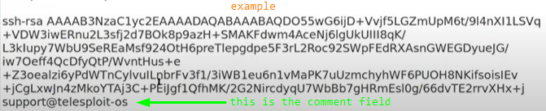
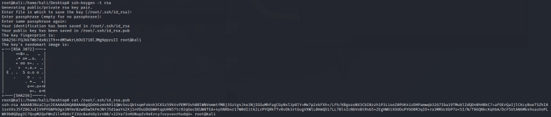
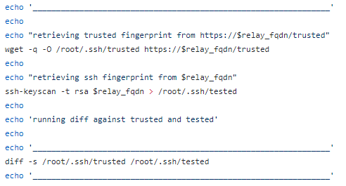
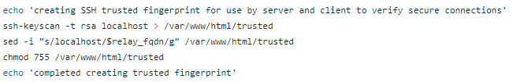
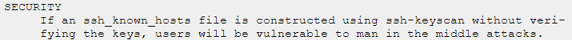

Configure Server
Configure the Server (Raspberry Pi)
To check if the Telesploit Relay works and is online we have to ping the subdomain that we have
associated with the Ip address of the AWS instance(see
here)
daniele@TelesploitServer:/$ ping <relaySubdomain>
1. There is been a change in the new Kali Linux 2020. Now we have to create the root user
◇
In the old version we run as root at boot
◇ In the new version 2020 we need to create an unprivileged user
because root is lock.
▪ So we can upgrade the local local user to a super user that will do not ask for
password when we use privilege commands
daniele@TelesploitServer:/$ sudo passwd root #set a password for the root user, the root user is now activated
2. Fully update of Kali Linux
root@TelesploitServer:/$ apt-get update -y
root@TelesploitServer:/$ apt-get upgrade -y
3. Install Telesploit server
daniele@TelesploitServer:~$ sudo -i #we have to run relay_setup.sh as root
root@TelesploitServer:~# cd /root
root@TelesploitServer:~# git clone https://github.com/telesploit/telesploit-server.git
5. Update the relay_fqdn, tester_pub_key, usb_drive, and network_interface_name variables in
telesploit-server/server.cfg
root@TelesploitServer:~# ls
root@TelesploitServer:~# cd telesploit-server
root@TelesploitServer:~# ls
root@TelesploitServer:~# nano server.cfg
1) Change
relay_fqdn='relay.example.com' To
relay_fqdn='<relaySubdomain>' → <relaySubdomain> is the subdomain that we associate
to the ip address of the instance of AWS (
here to
see how we have done)
2) Change
tester_pub_key='ssh-rsa AAAA mykey@example' To
tester_pub_key='<penTesterPublicKey>' → <penTesterPublicKey> is the public key of
the penetration tester. We have to use OpenSSH authorized_keys file format(RSA key pair) for it because will be
added to /.ssh/authorized_keys that support this format for multiple keys.
In this way we can access to the
Server via ssh also with the private key pair of <penTesterPublicKey>
example: OpenSSH authorized_keys file format: ssh-rsa AAAA[...lots of
characters...]
JohnDoe  example 2: To generate a RSA Key
pair
 3) Change
usb_drive='/dev/sdb1' To
usb_drive='<mount-position>' → usb drive where the logs and configs are saved, In the
next point we will set up it
4) Change
network_interface_name='eth0' To
network_interface_name='<interface>' → usually is correct
5) Change
gpg_key='PlzChangeMe-NoSingleQuotes!' To
gpg_key='<your-choice>' →
it is recommended to change this, the network and connection configs will be encrypted with this gpg_key and copied
to the USB drive. To decrypt we will use the same gpg_key
7. Insert a USB flash drive (SanDisk
Ultra Fit or other small form factor USBs recommended as this must stay connected to the system)
8. Format for
example with gparted the USB drive to FAT32 and label it as TELESPLOIT (default)
9. Mount the USB flash drive,
the position of the USB is by default: /media/root/TELESPLOIT
◇ by GUI: Simply right click on the TELESPLOIT
drive icon on the desktop and select mount
◇ by command line:
root@TelesploitServer:~# wipefs -a -f /dev/sdb
root@TelesploitServer:~# parted -s -a optimal /dev/sdb mklabel msdos mkpart primary fat32 0% 100%
root@TelesploitServer:~# mkfs.vfat -n TELESPLOIT /dev/sdb1
root@TelesploitServer:~# mkdir -p /media/root/TELESPLOIT
root@TelesploitServer:~# mount /dev/sdb1 /media/root/TELESPLOIT
10. Run server script
/root/telesploit-server/server_setup.sh
The script will ask the following questions:
1) If any of these requirements have not been met
then press Ctrl+C to exit, otherwise hit any key to continue...
2) If the relay does not resolve then exit now
and check the network connection and DNS entry for the relay. Press any key to continue or Ctrl+C to exit...
3) Configure the Telesploit server for DHCP or STATIC? [D/S] → answer: DHCP in this case is ok
4) What type of
connection should the Telesploit server use?
1- [D]irect TLS - No proxy is required. Certificate checking is
enabled. SSH host-based verification is enabled.
2- [U]nsafe TLS - No proxy is required. Certificate checking
is disabled. SSH host-based verification is enabled.
3- [P]lain - Simple proxy. No password required.
Certificate checking is disabled. SSH host-based verification is enabled.
4- [B]asic - Proxy uses BASIC
authentication. Certificate checking is disabled. SSH host-based verification is enabled.
5- [N]TLM - Proxy
uses NTLM authentication. Certificate checking is disabled. SSH host-based verification is enabled.
Choose the
Telesploit server connection type [D/U/P/B/N]: → answer: Here we have to decide how to connect the server to the
relay.
▪
The recommended configuration is Direct TLS , with
that we not have a proxy from which we have to get out, but we have both security check(Certificate check and SSH
verification).
▪ If they are breaking connection and and we get SSL errors we can do the
Unsafe TLS, the Certificate check is disabled but there is still SSH
verification so we do not have to worry about about a man in the middle attack
▪
Basic and
NTLM if we
need a proxy to get out from the network
6- identical files indicate a secure connection. non-matching files
may indicate an active man-in-the-middle attack, review the files /root/.ssh/trusted and /root/.ssh/tested before
continuing
*CODE server_setup.sh: These are the operations that the server_setup.sh has done:
 *
ATTENTION: in the test done, during the configuration, in this script
server_setup.sh the files did not match while during
Configure
Client in setup_client.sh (point 2.4) yes... Is this could be caused by the fact that to retrieve the
fingerprint from the webpage is been used curl instead of wget?
*CODE relay_setup.sh: This is been the
creation of the SSH trusted fingerprint on the relay, using the script relay_setup.sh
 if /root/.ssh/trusted and /root/.ssh/tested do not
match, could be a problem of the configuration or a MITM attack.
This is also the reason of why we have
associated the Ip address of the AWS instance with the a subdomain of our domain, so we can do this check!
From
Oracle documentation:

{kind=link}